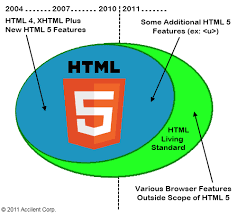
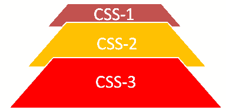

Evolution of HTML from HTML2.0 to HTML5
HyperText Markup Language (HTML) was invented in the 1990s by Tim Berners-Lee as a prototype with the goal to distribute structured documents, create pages and applications over computers, firstly among scientists and academics. Since its first formal standard version was published in 1995, as the popularity of the Web was rising the HTML also launched new updated versions offering new functions, features and more accessibility to authors and users. (Addison Wesley, 1998)
Versions of HTML

- HTML 2.0
- HTML 3.2
- HTML 4.01
- HTML 5
HTML 2.0
Launched in November 1995 by the Internet Engineering Task Force (IETF) and named RFC 1866: Hypertext Markup Language 2.0 this was the first officially published version, was introduced the general tags structures such <HTML>, <HEAD>, <BODY>, <TITLE> and <META>, moreover, allowed users to enter and submit data and perform some other actions. (LocGov, 2018)
HTML 3.2
Released in January 1997 by the W3C Consortium, the HTML 3.2 version was performed in association with some browser vendors such as IBM, Microsoft, Netscape and Sun Microsystems, this version also was standardized by W3C. Introduced new functions and elements such as applets, fonts, colours attributes, tables, text flow around images, some new tags implemented were <FONT>, <DIV>, <APPLET>, <SCRIPT> and <STYLE>. (LocGov, 2018)

HTML 4.01
The version HTML 4.01 was released in December 1999 by W3C, created to fix some minor corrections the HTML 4.0, this version brought walks towards making the Web trust World Wide, moreover, added support for other kinds of multimedia setups, languages scripts, style sheets, print formats, accessibility for users with disabilities, also increased structural elements like <STYLE>, <SCRIPT> and introduced the <OBJECT> as new. (W3C, 1999)
HTML 5
HTML 5 is the latest version, published as a stable only in October 2014 by the W3C, this version is now maintained by the Web Hypertext Application Technology Working Group (WHATWG). This specification improved features like web browsing, semantic markup, screen sizes, audio, video, interactive applications, and structural elements, these are the main tags added <MAIN>, <SECTION>, <ARTICLE>, <HEADER>, <FOOTER>, and <NAV>. (Wikipedia, 2021)
Summary
Versions of HTML with depreciated tags
| Version | Year |
| HTML 2.0 | 1997 |
| HTML 3.2 | 1997 |
| HTML 4.01 | 2000 |
| HTML 5 | ----- |
Evolution of CSS
Cascading Style Sheets (CSS) is a powerful language, created by Håkon Wium Lie in 1994, aiming to make Web publishing documents more readable to users by adding stylings such as fonts, spaces and colours to layouts, offering users to set their own personal preferences. Afterwards, since the first standard version (CSS1) was officially published in 1996, it has been updated to new versions and specifications, always giving innovative features, new functions, and more accessibility elements. (Bert Bos, 2016)
Versions of CSS
- CSS 1
- CSS 2.0
- CSS 2.1
- CSS 3

CSS 1
CSS1 was launched in December 1996 by World Wide Web Consortium (W3C) this version introduced the general styling to the Web documents such as font properties, emphasis, text colour, backgrounds, attributes, spacing between words, text alignment, images, tables, margin, border, padding, and positioning for most elements, making the Web much more pleasant to users. (W3Schools, 2021)
CSS 2.0
CSS2 is an upgraded version built from its previous one, released in May 1998 by The Cascading Style Sheets and Formatting Properties (CSS&FP) Working Group of the W3C, this version gained new important functional features such as a wide range of selectors, enhanced properties, pseudoclasses and pseudoelements, texts and fonts, positioning in all three axes, rows and columns, heights, widths, sizable fun, paged media and others. (Eric Meyer, 2003)

CSS 2.1
CSS 2.1 is a revision version, created to correct errors and remove ineffectively features, this revision supports properties to users' interface like documents to visual browsers, aural, printers, braille, and handheld devices, also support content positioning, downloadable fonts, table layout, features for internationalization, automatic counters, and numbering. (W3C, 2008)
CSS 3
CSS3 is the latest version, published in June 2011 by W3C, it still has been receiving updates. Different from other earlier versions this version introduced the modularization specification by modules, aiming to help relation between the whole specification, reduce documents sizes, and allow updates by modules as needed. Some gained new functions are rounded corners, border-radius, text and drop shadows, linear and radial gradients, multiple background images, box models, and media queries. (W3C, 2020)
Summary
Versions of CSS
| Version | Year |
| CSS 1 | 1996 |
| CSS 2 | 1998 |
| CSS 2.1 | 1996 |
| CSS 3 | 1999 |